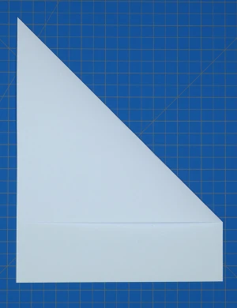
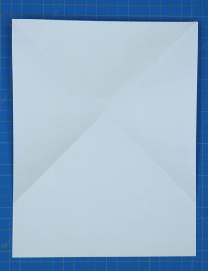
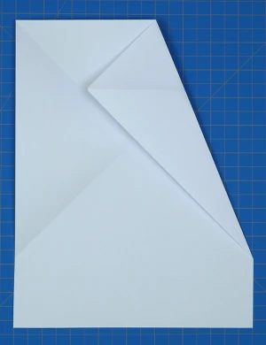
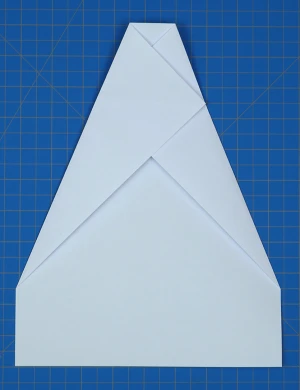
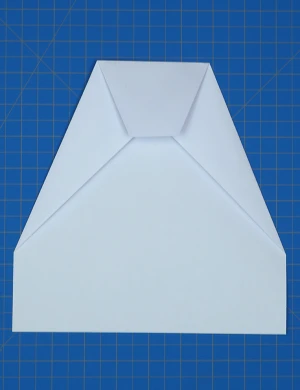
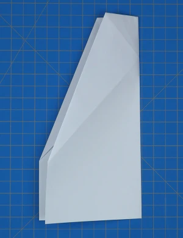

1步骤 1
Fold one corner down to the other side. Unfold.

Fold one corner down to the other side. Unfold.

Repeat on the other side and unfold again.

Fold one side over and line up the edge with the crease made in the previous step.

Fold the other side over along the same crease.

Fold the top down along the existing creased line.

Fold the entire airplane in half down the middle. Unfold.